Interfaces Digitais
Navegação Componentes
Componentes
Menu
Tabs
Breadcrumb
Footer
Menu Principal (Header)
Marca
Na esquerda, clica volta para a home.
Menu
Na direita, o mais simples possível.
Busca?
Campo de busca em sites de conteúdo (YouTube, Github).
Fixo?
Depende do tamanho do conteúdo, se for fixo e grande diminuir o mesmo.
Anatomia de um cabeçalho (header) simples em seu formato desktop e mobile.
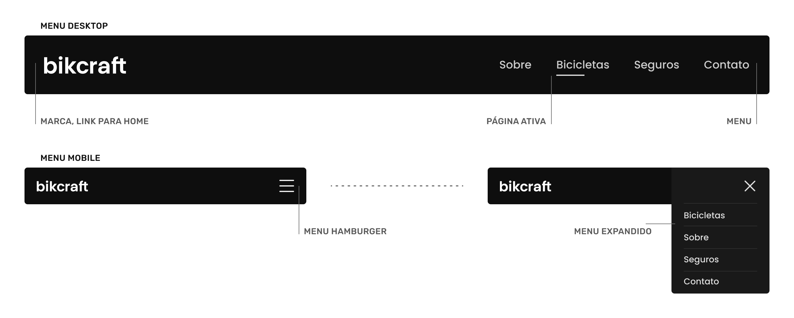
Praticamente todos os cabeçalhos abaixo seguem a estrutura básica, porém com modificações para as necessidades do site.
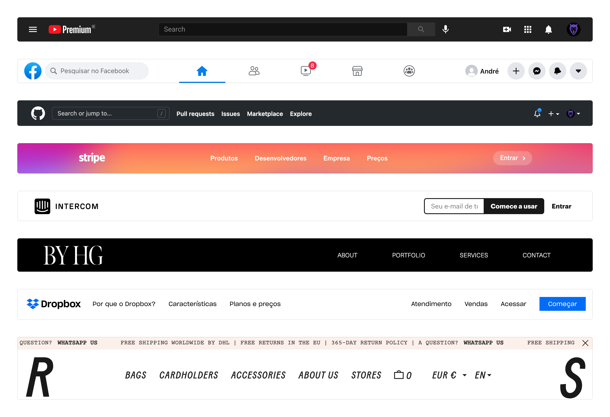
Menu Secundário
Serve para expandir as opções do menu principal.
No site da RSVP e da Apple ícones e imagens são utilizadas para diferenciar os itens do menu secundário.
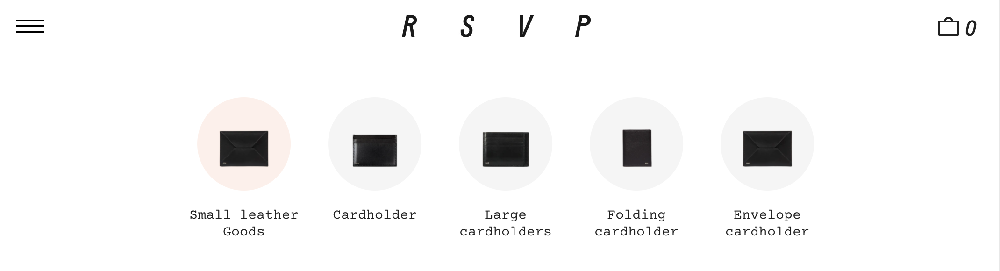
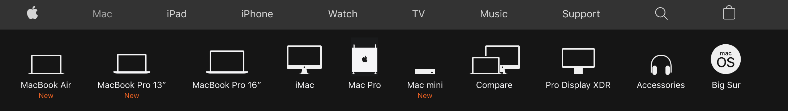
Na documentação do Vue.js o menu secundário serve para informar ao usuário todas as seções que existem na documentação.
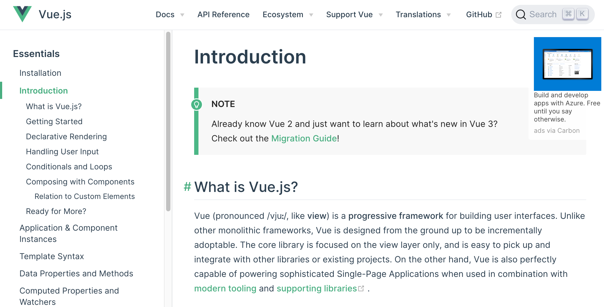
Tabs
As Tabs (abas), são menus localizados que geralmente não levam o usuário para outra página, mas sim para um novo conteúdo no mesmo local. As tabs são inspiradas em arquivos físicos, onde etiquetas indicam o conteúdo.
Clicável
Indicar que a aba é clicável.
Estado
Indicar claramente qual aba está ativa no momento.
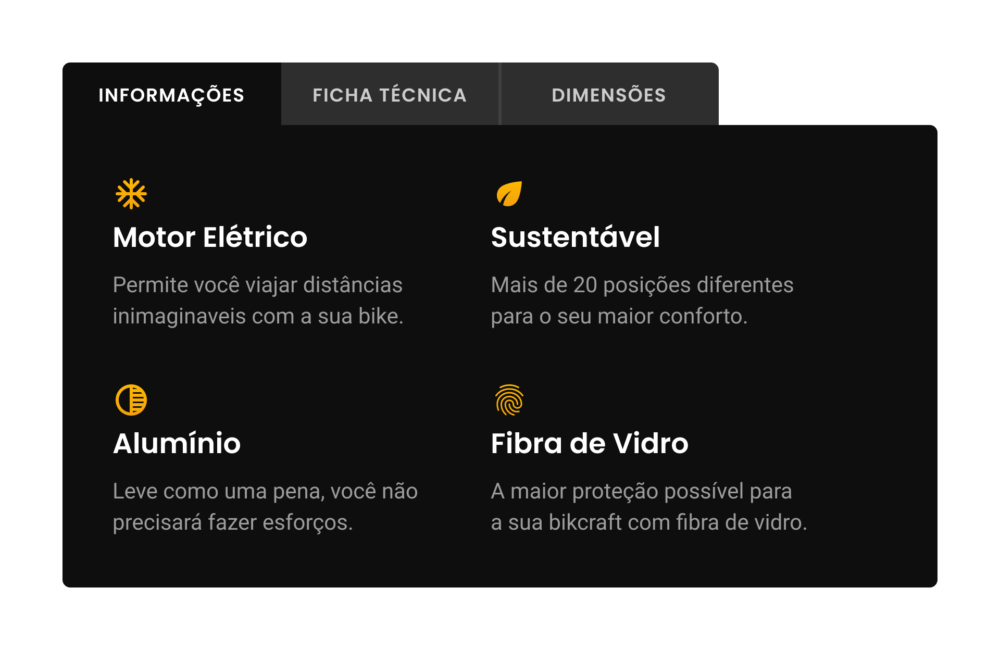
A navegação por abas por ser utilizada de diversas formas diferentes, com imagens, ícones, marcas, etc. O princípio dela é ter uma lista que controle a troca de conteúdo.
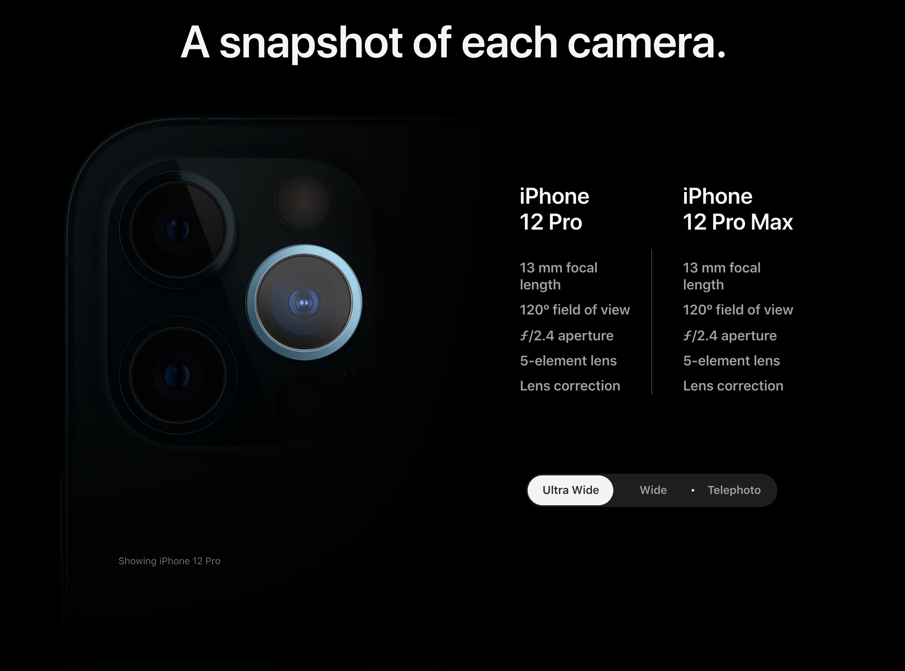
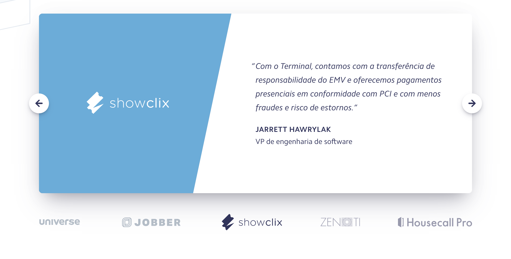
Breadcrumb
O uso de breadcrumb (migalhas de pão) é comum em sites que possuam diversos níveis e subníveis de informações, como em um comércio eletrônico.
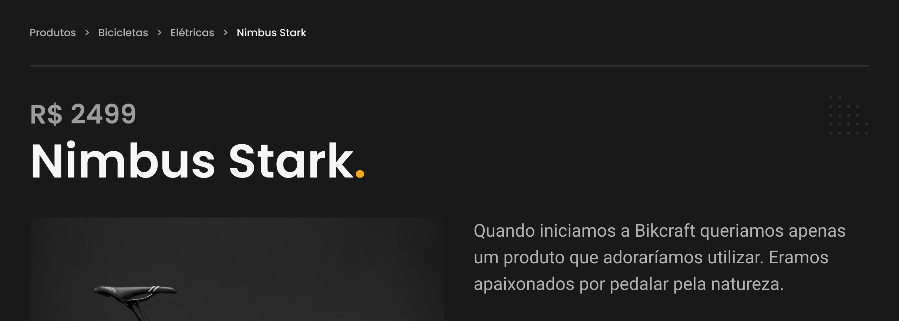
Footer
O Footer (rodapé) do site é geralmente utilizado para colocarmos um mapa de links do site. Não precisa ter exatamente todos os links, mas geralmente contém itens importantes que não fazem parte do menu principal, como: termos e condições ou a política de privacidade do site.
Contato
Colocar no footer as principais informações de contato.
Links Importantes
Ter links importantes que não foram colocados no menu principal.
Redes Sociais
Ter os links para as principais redes sociais utilizadas pela empresa.
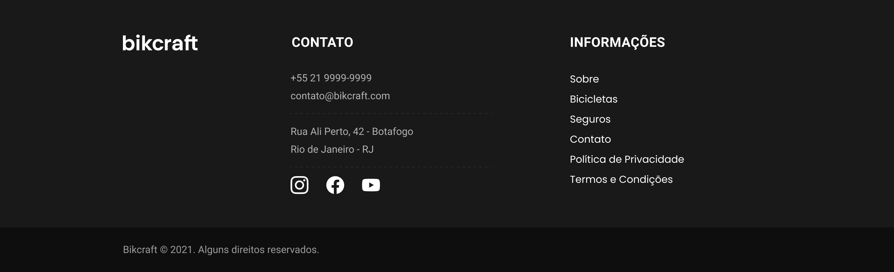
O Stripe por ser um site complexo, aproveita o footer para colocar diversos links importantes para o site.
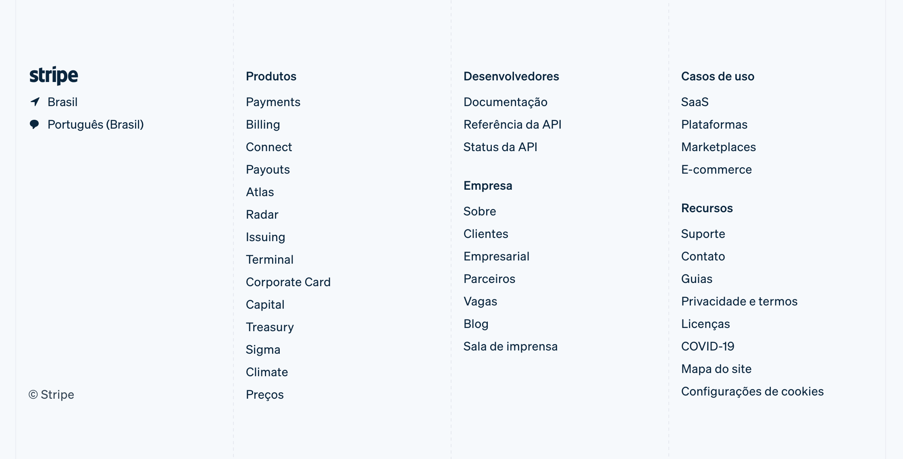
O site da RSVP o footer é utilizado para disponibilizar dados de contato da sua principal loja, outros links importantes, links para redes sociais e também um formulário para captura de emails.
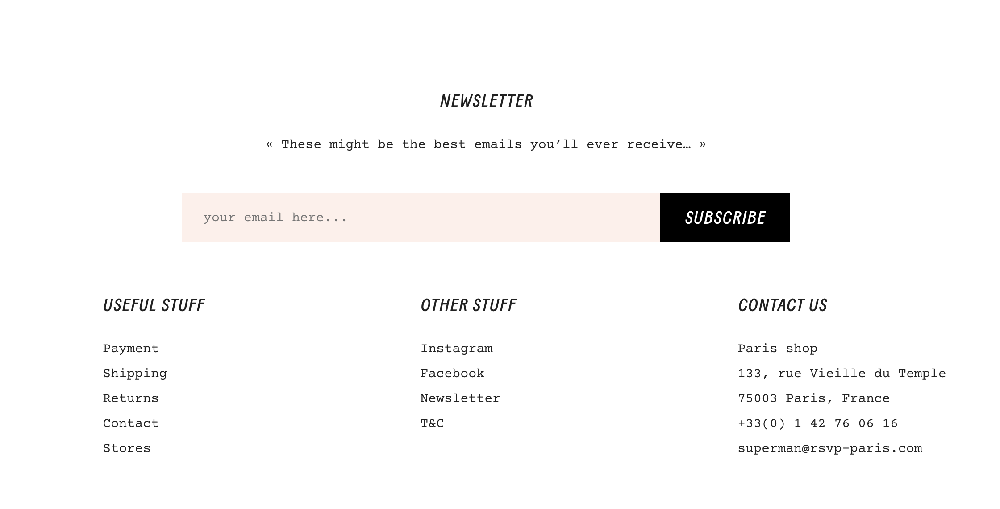